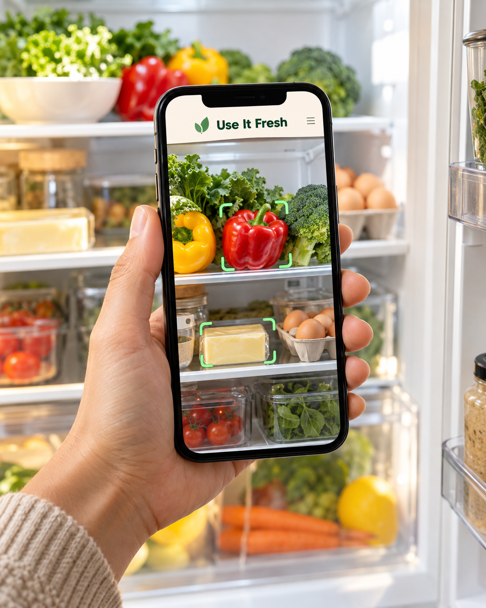

YOUR SOCIAL CONTENT, FRESHLY PICKED
Good ideas.
Better together.
A place to preview, pick apart and polish what’s next for Use It Fresh.
Let’s take a look ↗Scan it. Pick it. Chef it.
InstagramFacebookTikTokYouTube Shorts

Fresh eyes welcome. ✦Campaign visual concept01 Pick a day
02 Preview the creative + copy
03 Share your thoughts
04 Polish, approve, schedule
ON THE KITCHEN BENCH
The two-week launch
Two posts each day: 8:00 am and 8:00 pm, Australia/Sydney. Start date to be agreed.
Checking review connection…
No posts match that search. Try another ingredient.